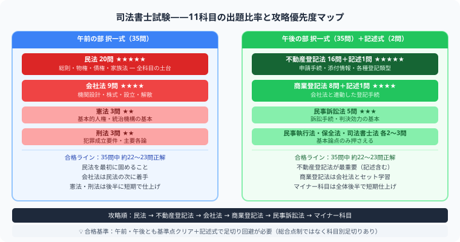
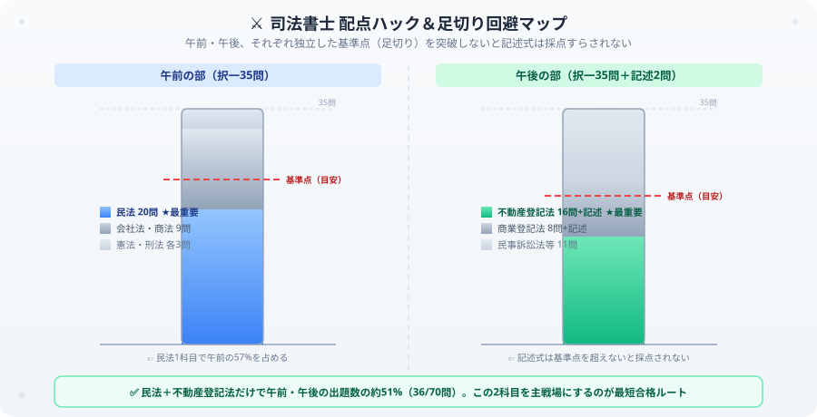

司法書士の独学合格ガイド【2026年版】勉強時間・スケジュール・科目別攻略法
司法書士は登記・法律手続きの専門家で、合格率約4%の超難関国家資格です。1,000〜3,000時間という膨大な勉強時間が必要と聞くと、それだけで心が折れそうになりますよね。でも安心してください、僕自身も公認会計士試験という別の超難関試験と毎日格闘している身として断言します——範囲が広い試験ほど、「どこに配点が集中しているか」を見抜いた者が勝ちます。司法書士の場合、その正体は民法と不動産登記法のツートップです。この記事では、このツートップを主戦場に据えた効率的な独学戦略を、僕の視点から熱く解説します。この記事が力になったら、ぜひ最後の【いいねボタン】を押してもらえると嬉しいです！
司法書士の論点別ロードマップ

司法書士試験は午前・午後に科目別の足切り（基準点）がある点が特徴です。民法と不動産登記法の2科目で合格の大半が決まるといっても過言ではなく、この2科目を主戦場として徹底的に固めることが最短合格への道だと僕は考えています。

民法と不動産登記法で午前・午後の出題数の約51%を占める。両方で基準点を超えないと記述式は採点されない
司法書士は範囲が広いので、まずは合格に直結する幹の論点から進めましょう。最初は民法で法律の土台を作り、不動産登記法、会社法・商業登記法へ広げるのがおすすめです。
司法書士試験の基本情報
| 項目 | 内容 |
|---|---|
| 試験日 | 毎年7月（筆記）・10月（口述） |
| 合格率 | 約3〜5% |
| 試験科目 | 11科目 |
| 問題数 | 午前35問＋午後35問（択一）＋記述2問 |
| 必要勉強時間 | 1,000〜3,000時間 |
| 平均受験回数 | 3〜5回 |
11科目の出題比率と攻略優先度
| 科目 | 午前/午後 | 出題数 | 重要度 |
|---|---|---|---|
| 民法 | 午前 | 20問 | ★★★★★ |
| 不動産登記法 | 午後 | 16問＋記述 | ★★★★★ |
| 商業登記法 | 午後 | 8問＋記述 | ★★★★ |
| 会社法・商法 | 午前 | 9問 | ★★★★ |
| 憲法・刑法 | 午前 | 各3問 | ★★ |
| 民事訴訟法等 | 午後 | 各3〜5問 | ★★★ |
独学合格への3段階戦略
ここからは僕が会計士試験の長期戦を戦う中で培った、超難関試験の攻略の型をそのまま当てはめます。段階を飛ばさずに順番通り進めることが、遠回りに見えて実は一番の近道です。
第1段階：インプット期（〜1年目）
- 民法・不動産登記法・会社法の3科目を集中的に固める
- テキストは1冊を繰り返す（複数冊に手を出さない）
- 1日3〜4時間の学習を毎日継続する
第2段階：アウトプット期（1〜2年目）
- 過去問を年度別に解いて本番感覚を養う
- 記述式を毎週1問以上書く練習をする
- 足切り対策として全科目バランスを確認する
第3段階：直前期（試験3ヶ月前）
- 模擬試験を3回以上受けて時間配分を確認
- 苦手論点の集中補強
- 記述式の精度を高める（部分点狙い）
3年間の学習スケジュール（独学の場合）
目安として、僕なら次のような3年間の配分で組みます。長期戦だからこそ、途中でペースを崩さないことが何よりも大事です。
| 期間 | 重点科目 | 目標 |
|---|---|---|
| 1年目 | 民法・憲法・刑法 | 午前の択一対策を固める |
| 2年目 | 不動産登記法・商業登記法 | 記述式の基礎を作る |
| 3年目 | 全科目横断・模擬試験 | 本番形式で基準点超えを安定させる |
受験生がよく引っかかる3つの落とし穴
- 憲法・刑法のようなマイナー科目を「捨て科目」にしてしまう：民法・不動産登記法に配点が偏っているのは事実ですが、午前の基準点は科目別ではなく総合点で判定されます。3問しかない科目でも0点にすると総合点が伸びず、基準点割れの原因になります。最低限の得点は必ず確保してください。
- 記述式対策を直前期まで後回しにしてしまう：記述式は択一のように短期間で得点力が伸びません。答案を書く手の速さや不動産登記の申請書のひな形は、日々書き続けて初めて身につきます。インプット期から並行して着手しましょう。
- 独学のまま何年も同じ勉強法を繰り返し、外部からのフィードバックを受けない：自己流の弱点は自分では気づきにくいものです。模試や答練を定期的に受けて、自分の答案・理解のズレを客観的にチェックする機会を年に数回は作ってください。
まとめ
- 合格率約4%の超難関資格で平均3〜5回の受験が必要
- 民法・不動産登記法・会社法の3科目が試験の核心
- 午前・午後どちらも足切りを突破する必要がある
- 独学の場合は1日3〜4時間×3年間が目安
- 記述式対策は毎週継続的に練習することが不可欠
1,000時間超の壁に、今まさに立ち向かっているあなたへ
11科目、合格率約4%、平均3〜5回の受験——数字だけ見れば誰だって怯みます。それでも机に向かい続けているあなたは、それだけで既にすごいことをしています。僕も公認会計士試験という長期戦を戦う中で、心が折れそうになる夜が何度もありました。でも配点の急所を見極めて、そこを愚直に固め続ければ、超難関資格も必ず突破できます。一緒に、司法書士という高い壁を越えましょう！
この記事が少しでも力になったら、執筆のモチベーション維持のために、この下にある【いいねボタン】をポチッと押してもらえるとめちゃくちゃ嬉しいです！